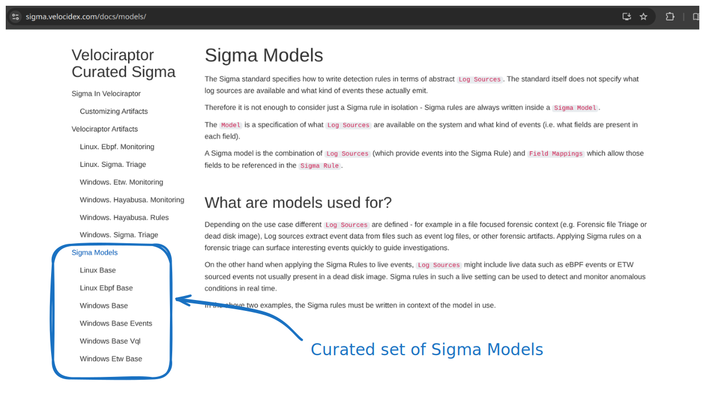
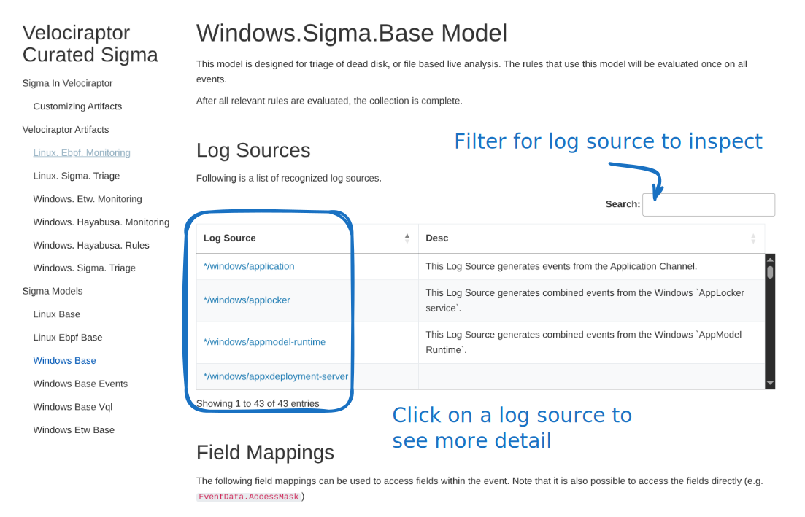
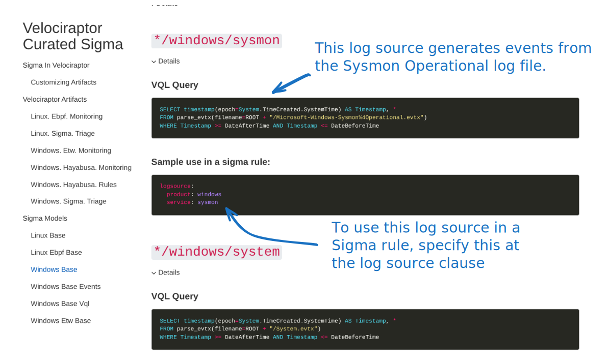
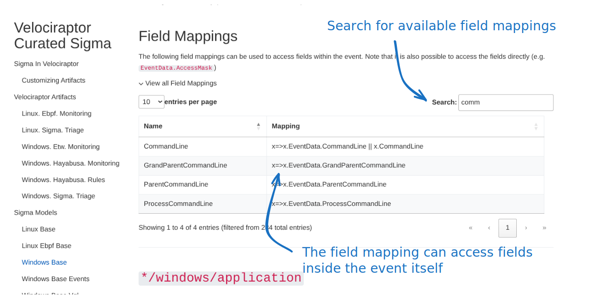
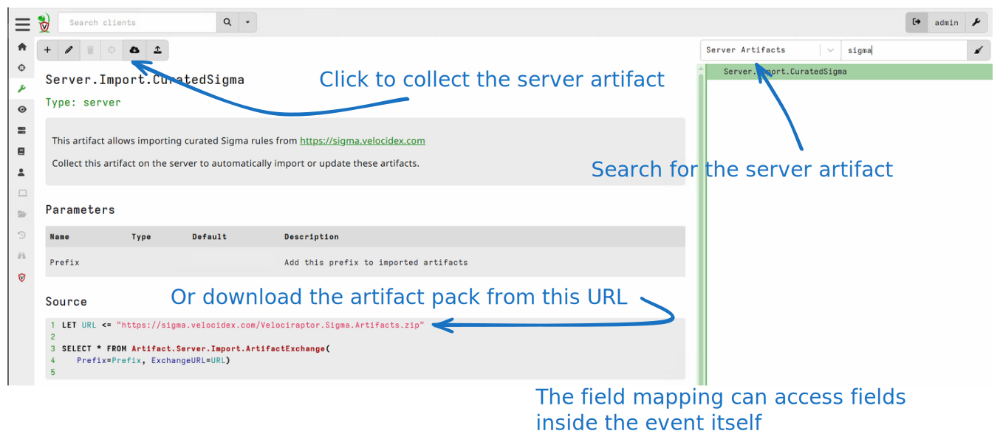
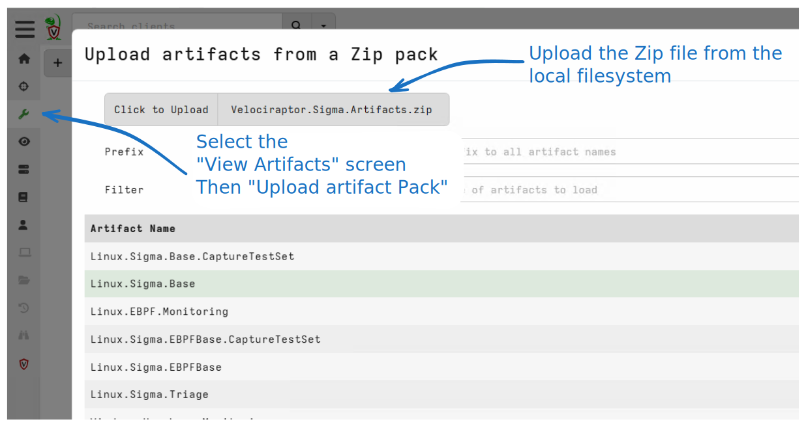
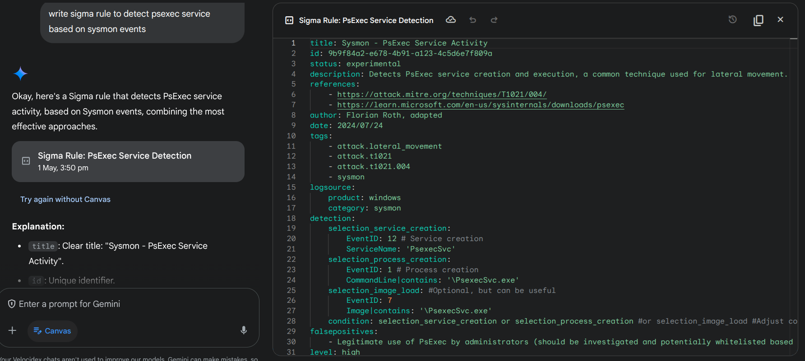

<!-- .slide: class="title" --> <h1 style="font-size: 4ex">Detection Engineering</h1> <div class="inset"> ## The art and science of catching intrusions! ### Mike Cohen, Digital Paleontologist, Rapid7 </div>
<!-- .slide: class="content" --> ## Why detection? * Attackers dwell time is getting quicker * Detection coverage needs to increase to more endpoints. * Automation! * Ultimately detection is about: * Maximize probability of detecting malicious action * Minimize probability of false positives --- <!-- .slide: class="content" --> ## Why engineering? * Involves designing a better detection process * Systematic - Clear process to follow. * Iterative - increase accuracy, reduce false positive. * Testable - Reduce chance of regressions * Engineering involves design * Maximize the probability of detection * Design new event sources to increase accuracy. --- <!-- .slide: class="full_screen_diagram small-font" --> ## Where does Detection Engineering fit?  https://cyb3rops.medium.com/about-detection-engineering-44d39e0755f0 --- <!-- .slide: class="content" --> ## Detection Engineering role * More than just typing queries into SIEM * More emphasis on the Engineering side. * Feedback cycle --- <!-- .slide: class="full_screen_diagram small-font" --> ## The detection pipeline  --- <!-- .slide: class="content" --> ## The detection pipeline 1. Event Generation on the endpoint 2. Pre-filtering on the endpoint 3. Data normalization and enrichment 4. Transport and storage 5. Detection ---- <!-- .slide: class="full_screen_diagram small-font" --> ## Exercise: Preparations ### Enable the event artifact Windows.Events.TrackProcesses <img src="enabling_client_monitoring.svg"> ---- <!-- .slide: class="full_screen_diagram small-font" --> ## Exercise: Preparations ### Enable the event artifact Windows.Events.TrackProcesses <img src="enabling_client_monitoring_2.svg"> ---- <!-- .slide: class="full_screen_diagram small-font" --> ## Exercise: Preparations ### Enable the event artifact Windows.Events.TrackProcesses <img src="enabling_client_monitoring_3.svg"> --- <!-- .slide: class="content small-font" --> ## Anatomy of an attack * We will study the example of privilege escalation using `PsExec` * It is a very well known and well detected vector. * We just use it as an example. * You may be very familiar with this, but... * Let's think about how we can detect this attack * Then lets think about how to make it more robust! * Download psexec.exe ```bash curl -o psexec.exe https://live.sysinternals.com/psexec.exe ``` --- <!-- .slide: class="content small-font" --> ## Exercise: Sysmon and ECS * Generate some interesting events ``` psexec.exe /s cmd.exe ``` * Privilege escalate to `SYSTEM` user! * This will normally be done across the network (Lateral movement) * For this demonstration we use it locally * Check the event viewer for the logs! --- <!-- .slide: class="full_screen_diagram small-font" --> ## Attack is launched  --- <!-- .slide: class="full_screen_diagram small-font" --> ## Setting the Eula PsExec helps detection by setting a `EULA` registry key!  --- <!-- .slide: class="full_screen_diagram small-font" --> ## Extract the payload and copy to the system This will normally be done remotely over RPC  --- <!-- .slide: class="full_screen_diagram small-font" --> ## Install the service This will normally be done remotely over RPC <img src="psexec_attack_step4.svg" style="width: 100%;"> --- <!-- .slide: class="full_screen_diagram small-font" --> ## Launch the service remotely. Service is launched by the service manager so runs as SYSTEM <img src="psexec_attack_step5.svg" style="height: 500px;"> --- <!-- .slide: class="full_screen_diagram small-font" --> ## Collect the artifact Windows.EventLogs.Evtx ### This artifact parses the raw event logs <img src="collecting_raw_events.png"> --- <!-- .slide: class="full_screen_diagram small-font" --> ## Collect the artifact Windows.EventLogs.Evtx ### Event logs have a defined "shape" <img src="raw_windows_event.svg"> --- <!-- .slide: class="full_screen_diagram small-font" --> ## Collect the artifact Elastic.EventLogs.Sysmon <img src="collecting_ecs_events.png"> --- <!-- .slide: class="full_screen_diagram small-font" --> ## Collect the artifact Elastic.EventLogs.Sysmon ### ECS Events have a defined "shape" <img src="ecs_event.svg"> --- <!-- .slide: class="content small-font" --> ## How would we detect this "attack"? * Let's detect: Spawning of the `psexecsvc.exe` service * Filter the raw Windows Event Log collection by adding a WHERE clause to isolate the attack. * You can post process the collected data in the notebook --- <!-- .slide: class="full_screen_diagram small-font" --> ## How would we detect this "attack"? <img src="filtering_event_logs.svg"> --- <!-- .slide: class="full_screen_diagram small-font" --> ## How would we detect this "attack"? <img src="filtering_ecs_logs.svg"> --- <!-- .slide: class="content small-font" --> ## How can we communicate this detection? * We could share queries with others * Depending on which event collection system they use, the queries are not easily interchanged * What could go wrong? * Different pre-filtering might exclude the relevant events * Different fields might be collected * Data shape is different in different data storage systems. * We will come back to this! --- <!-- .slide: class="content small-font" --> ## Making the detection robust * Clear the event logs to start fresh. * Rename the `psexec.exe` file to `nothing.exe`. ``` copy psexec.exe nothing.exe ``` * Launch the service with a different service name ``` nothing.exe -r nothing -s cmd.exe ``` --- <!-- .slide: class="full_screen_diagram small-font" --> ## Renamed service file <img src="renamed_service.svg"> --- <!-- .slide: class="full_screen_diagram small-font" --> ## Recollect our detection query ### No hits! <img src="renamed_service_no_hit.png"> --- <!-- .slide: class="content small-font" --> ## How can we make the detection more robust? * Consider other pieces of information! * Sysmon provides **some** metadata found in the executable file itself. * `OriginalFilename` * `VersionInformation` * `Product` * `Description` * Simply renaming the binary does not change the data inside the file. --- <!-- .slide: class="full_screen_diagram small-font" --> ## Update the detection query ### Adding extra data points can improve detection  --- <!-- .slide: class="full_screen_diagram small-font" --> ## Take it to the next level ### Modify the Product string in the file <img src="modify_binary.svg"> --- <!-- .slide: class="content small-font" --> ## Event is missing this field! <img src="modified_event.svg"> --- <!-- .slide: class="content small-font" --> ## Recap: what have we learnt? * Detection requires an event source * Event sources are usually normalized to an internal schema "shape" * Detection matches events against a "rule" * A match is a "hit" * Attackers can change their methodologies to bypadd detection rules * Rules can be improved by adding data points! * Communicating a detection is difficult! * Exact rules depend on the tech stack and specific configuration. * Not portable
<!-- .slide: class="title" --> ## Sigma Rules - Vibe detection ```yaml title: PsExec Service Start description: Detects a PsExec service start author: Florian Roth (Nextron Systems) logsource: category: process_creation product: windows detection: selection: CommandLine: C:\Windows\PSEXESVC.exe condition: selection ``` [proc_creation_win_sysinternals_psexesvc_start.yml](https://github.com/SigmaHQ/sigma/blob/b062d8ad650054cd20836d5ba38031090b8d8c33/deprecated/windows/proc_creation_win_sysinternals_psexesvc_start.yml) --- <!-- .slide: class="content" --> ## Sigma Rules * A Sigma rule specifies how to detect a particular attack * Think of it as **grep** for event logs * Vibe detection * *logsource* section specifies an event source to match the rule against. * *detection* clause contains a list of `selections` joined into a logical `condition`. * *condition* clause specifies how to combine the detection clauses logically. * Selections refer to abstract fields that map to actual fields within the event. These mappings are called `Field Mappings`. --- <!-- .slide: class="content" --> ## Sigma Rules * The Sigma standard does not define: * What log sources are actually available * The specific structure of each event * What fields are available and what they are called. * The intention is to convey the "vibe" of a detection. * A Sigma Compiler for the target SIEM is used to convert this "vibe" to a concrete detection for a particular engine. --- <!-- .slide: class="full_screen_diagram small-font" --> ## The Sigma Compiler <img src="sigma_architecture.svg" style="height: 90vh"> --- <!-- .slide: class="content" --> ## The Sigma Model ### Converting a Vibe to a concrete detection * To convert a Sigma rule to a concrete detection: * **Field Mappings**: Mapping between abstract field names and concrete field names. * **Log sources**: Mapping between abstract log source specification and concrete data sources. * Code to convert the conditional logical clauses to platform specific query against the backend. * This is done by the Sigma Compiler for the target. * e.g. for Elastic --- <!-- .slide: class="content" --> ## The Sigma Model ### Converting a Vibe to a concrete detection * It generally does not make sense to speak of a `Sigma Rule` without knowing the exact `model` used. * The Sigma standard is not really portable, only the Vibe is portable. * When converting rules from one model, it helps to develop a new model with a 1:1 mappings. * For example, a Velociraptor Model to consume Sigma Rules written for the ECS stack. --- <!-- .slide: class="content" --> ## The Velociraptor Sigma Architecture * Velociraptor has a built in Sigma engine: * Accepts a model definition: * Log sources are VQL queries that generate events * Field mappings are VQL Lambda functions that resolve fields in the rule. * Rules are pushed to the endpoint for direct evaluation * Only Matches are forwarded to the server. --- <!-- .slide: class="full_screen_diagram small-font" --> ## The Velociraptor Sigma Architecture ### Velociraptor supports multiple models at the same time! <img src="velociraptor_sigma_flow.svg" style=""> --- <!-- .slide: class="content" --> ## The Velociraptor Curated Sigma Project * A Project to maintain and curate: * Useful set of `Sigma Models` for different situations * A Curated set of `Sigma Rules` taylored for use in the models. > https://sigma.velocidex.com/ --- <!-- .slide: class="full_screen_diagram small-font" --> ## The Velociraptor Curated Sigma Project  --- <!-- .slide: class="full_screen_diagram small-font" --> ## The Windows Base Model ### A dedicated model for windows event logs  --- <!-- .slide: class="full_screen_diagram small-font" --> ## The Windows Base Model ### Log sources consume event logs  --- <!-- .slide: class="full_screen_diagram small-font" --> ## The Windows Base Model ### Field mappings access event data  --- <!-- .slide: class="full_screen_diagram small-font" --> ## Importing The Velociraptor Sigma Artifacts ### Using the built in artifact  --- <!-- .slide: class="full_screen_diagram small-font" --> ## Importing The Velociraptor Sigma Artifacts ### By uploading manually  --- <!-- .slide: class="full_screen_diagram small-font" --> ## Recap: What is Sigma ? > It's just the vibe of the thing! <iframe width="560" height="315" src="https://www.youtube.com/embed/97IiPli_uXw?si=VLrvR1K82vKOt5OG&start=48" title="YouTube video player" frameborder="0" allow="accelerometer; autoplay; clipboard-write; encrypted-media; gyroscope; picture-in-picture; web-share" referrerpolicy="strict-origin-when-cross-origin" allowfullscreen></iframe> --- <!-- .slide: class="content" --> ## Recap: What is Sigma ? 
<!-- .slide: class="title" --> ## The Windows Event Logs <img src="windows_event_logs_title.svg" style=""> --- <!-- .slide: class="content" --> ## The Windows Event Logs * The original and main use case of Sigma Rules <img src="traditional_siem.png" style=""> --- <!-- .slide: class="content" --> ## The Windows Event Logs * Pros: * Built into the system * Many solutions for forwarding events * Cons: * Tradeoff between events to forward and network traffic/scale * Detection happens in SIEM so does not work offline * Long lead times between detection and response --- <!-- .slide: class="content" --> ## Exercise ### Write the previous detection as a Sigma Rule * Create a new notebook - Use Default Template <img src="new_notebook.svg" style=""> --- <!-- .slide: class="content small-font" --> ## Exercise ### Add a new VQL Cell <img src="add_cell.svg" style=""> --- <!-- .slide: class="content small-font" --> ## Exercise ### Write a Sigma rule to target PsExec! <img src="writing_sigma_rule.svg" style=""> --- <!-- .slide: class="content small-font" --> ## Exercise ### Write a Sigma rule to target PsExec! ```sql LET Rules = ''' title: Detect PSExec Service logsource: product: windows service: sysmon detection: eventId: EventID: 1 selection2: Image|re: psexesvc.exe$ condition: eventId and selection2 ''' SELECT * FROM Artifact.Windows.Sigma.Base(SigmaRules=Rules) ``` --- <!-- .slide: class="full_screen_diagram small-font" --> ## Exercise ### Test the new rule <img src="writing_sigma_rule_test.png" style=""> --- <!-- .slide: class="content" --> ## Using Curated Rule Sets for triage * Quickly determine what happened! * Rules can be fairly noisy * Can take a long time! --- <!-- .slide: class="full_screen_diagram small-font" --> ## Using Curated Rule Sets for triage ### The Windows.Hayabusa.Rules artifact <img src="hayabusa_rules.svg" style=""> --- <!-- .slide: class="full_screen_diagram small-font" --> ## Using Curated Rule Sets for triage ### Collect the artifact from the endpoint! <img src="collecting_hayabusa_rules.svg" style=""> --- <!-- .slide: class="full_screen_diagram small-font" --> ## Using Curated Rule Sets for triage ### Collect the artifact from the endpoint! <img src="collecting_hayabusa_rules_logs.svg" style=""> --- <!-- .slide: class="full_screen_diagram small-font" --> ## Using Curated Rule Sets for triage ### Inspect the results <img src="collecting_hayabusa_results.svg" style=""> --- <!-- .slide: class="full_screen_diagram small-font" --> ## Using Curated Rule Sets for triage ### Stack results: See what type of rules fired! <img src="collecting_hayabusa_stack.svg" style=""> --- <!-- .slide: class="full_screen_diagram small-font" --> ## Using Curated Rule Sets for triage ### Inspect hits <img src="collecting_hayabusa_stack_hits.png" style=""> --- <!-- .slide: class="content" --> ## Using Curated Rule Sets for triage ### Summary * The curated rules are very noisy! * This is OK for triage purposes * We just want to get the `vibe` of the compromise! * We can drill down later with specific artifacts. * Performing the triage as a hunt can quickly triage the entire environment! --- <!-- .slide: class="content small-font" --> ## Using Curated Rule Sets for triage ### Triage with on-endpoint Sigma evaluation vs. SIEM with log forwarding * SIEM log forwarder needs to balance tradeoffs: * Which event logs to forward * Only forwarded events can be triaged * Higher storage costs * Higher bandwidth from endpoint * Endpoint must be online * On endpoint evaluation: * Can access obscure or very noisy event logs * Can be done at scale * Efficient network transfers * Susceptible to log file erasure! --- <!-- .slide: class="content" --> ## Customizing the Velociraptor Artifacts ### Managing your own Sigma Rules * Sigma rules need tuning in many cases: * Some Sigma Rules are too noisy for your environment * We want to remove them * Custom Sigma Rules need to be added to your environment * Some Rules need to be modified. --- <!-- .slide: class="content small-font" --> ## Exercise: Create your own custom pack! ### Download the artifact pack for the `Windows.Hayabusa.Rules` artifact <img src="customizing_artifact_1.svg" style=""> --- <!-- .slide: class="full_screen_diagram small-font" --> ## Exercise: Create your own custom pack! ### Unpack it on the disk ### Create a new directory, add your new custom rule into it. <img src="customizing_artifact_2.svg" style=""> --- <!-- .slide: class="content small-font" --> ## Exercise: Create your own custom pack! ### Repack the artifact into a new artifact. <img src="customizing_artifact_3.svg" style=""> --- <!-- .slide: class="content small-font" --> ## Exercise: Create your own custom pack! ### Import the new artifact <img src="import_custom_artifact.png" style=""> --- <!-- .slide: class="content small-font" --> ## Exercise: Create your own custom pack! ### Collect new artifact <img src="custom_artifact_results.png" style="">